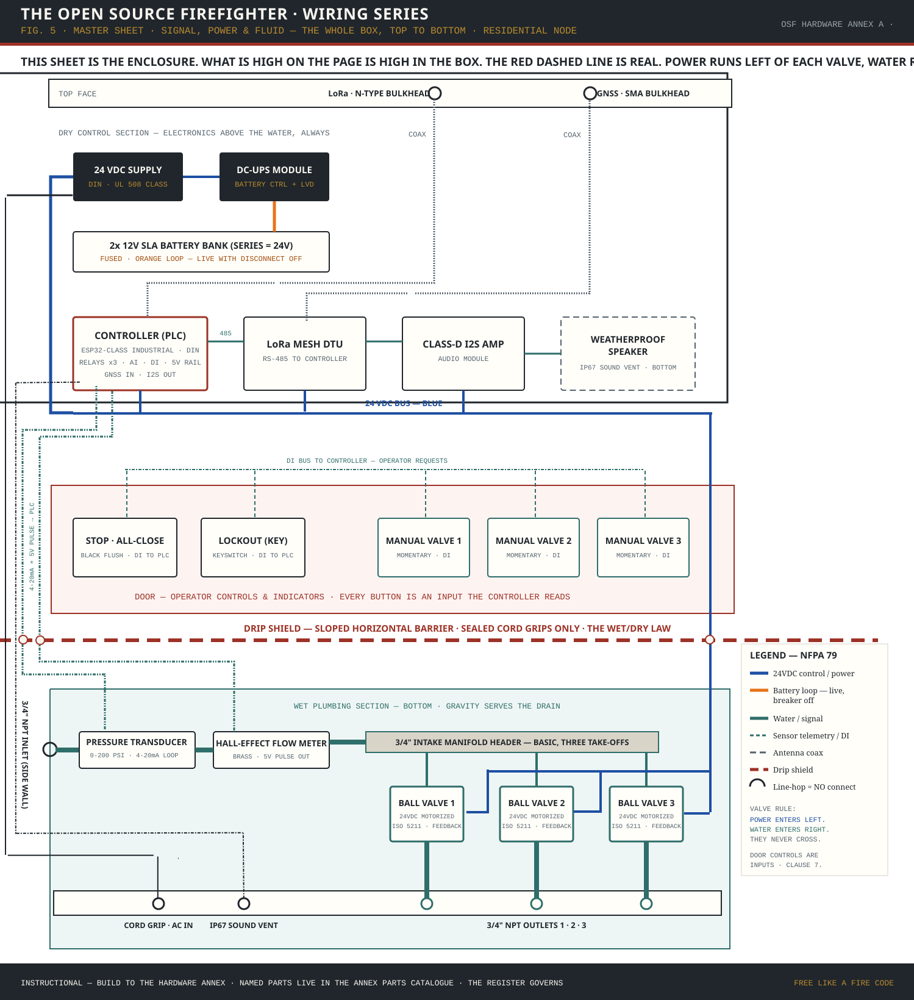
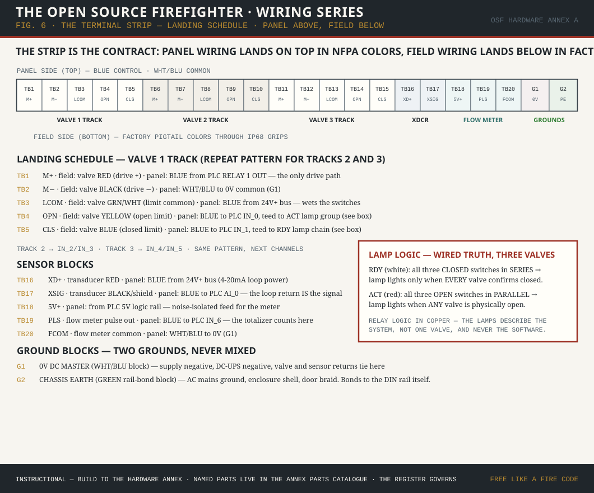

What it is and is not
The first question a code official asks about unfamiliar equipment is which regime it belongs to. The answer here is deliberate and narrow, and the specification states it in its own scope clause rather than leaving it to be discovered.
The unit is a supplemental exterior wetting system for ember defense. It is supplemental to, and replaces no requirement of, the wildland-urban interface provisions a jurisdiction has adopted — commonly the International Wildland-Urban Interface Code, NFPA 1140, or NFPA 1144.
What it is
- Supplemental exterior wetting equipmentProtective equipment on the outside of a structure, operating on the owner's own water.
- Subject to the codes you already enforceBuilding, plumbing, and electrical, at the editions your jurisdiction has adopted.
- Permitted workNothing in the specification waives local permitting. It says so in its scope clause.
- Owner-operatedThe operator physically present prevails over any automation, by charter.
What it is not, and shall not be represented as
- Not a fire alarm systemOutside the NFPA 72 / UL 864 listing regime. It initiates no alarm and notifies no occupant.
- Not a fire suppression systemNot a sprinkler system as defined by NFPA 13, 13D, or 13R. It makes no suppression claim.
- Not a life-safety notification systemIt makes no life-safety claim of any kind.
- Not a backflow prevention assemblyThe inlet check valve is not the backflow device. That assembly is whatever your water district requires.
Adoption by reference
The specification carries a standing rule that matters more to a code official than almost anything else in it: external standards are cited to the issuing authority's current edition as amended, and their values are never restated.
Where this specification names the National Electrical Code, an enclosure rating, a thread standard, or a wildland-urban interface code, it names it and stops. It does not reproduce a clearance, a conductor size, a pressure, or a rating that belongs to the issuing body. The issuing authority's text always governs.
The practical consequence for a jurisdiction: adopting or referencing this document cannot put it in conflict with the codes you enforce, because it asserts no numbers that are theirs to assert. When your adopted edition changes, this specification follows automatically, because it never said the old number out loud.
What you see at inspection
Before the numbered requirements, the plain version. A residential installation presents a short list of physical evidence, and nearly all of it is ordinary.
- A hinged, lockable enclosure on an exterior wallRated NEMA 4X or better, roughly the size of a breaker panel, with controls and indicator lamps on the door. Reference placement puts the controls in the 48 to 60 inch service band.
- Wet below, dry aboveControl electronics mounted above the wet works, no electrical component beneath a mechanical plumbing joint, drip loops on every conductor descending toward the hydraulic zone, and a drainage path from the enclosure low point to the exterior. Two-compartment and dual-enclosure formats are equally compliant and recommended for first builds.
- One inlet, up to three outlets, all NPTA spring check valve and a manual isolation valve on the inlet gallery. A manually valved drain-down port at the manifold low point. Garden-hose-thread adapters permitted as accessories at residential class.
- Cord-and-plug 120 VAC through a strain reliefA 24 VDC internal bus from standard DIN-rail power modules. Batteries on a dedicated shelf, commodity form factor, field-replaceable without special tools.
- Two antenna penetrations on the top faceWeatherproof RF bulkheads or assembled penetrations evaluated against the enclosure rating as assembled. A GNSS receiver with open sky view.
- A permanent labelSpecification and annex version built to, supply voltage, battery type and replacement rating, and the drain-down location. Zone outlets individually and permanently identified.
- A document holder inside the doorSystem intent and coverage narrative, zone layout, water supply type and measured delivery, electrical arrangement, self-calibration result, and a functional test of every zone valve, every hardware control, and the audible annunciation.


The requirements
The installation requirements in code-adoption language, filterable by class and by subject. This is the content of the Inspector's Review Draft, which exists to be marked up the way you would mark up a submittal. Comments on anything are welcome — especially anything that would generate a correction notice in the field.
Chapter 3 applies to all three classes. Chapters 4 through 6 add class-specific requirements; Chapter 7 covers documentation.
Backflow prevention complies with local water district requirements. Electrical installation complies with the locally adopted edition of the National Electrical Code or local equivalent. Appliance installation on hydrants or district valves is subject to the utility's or district's approval and standards. The specification says so in its own text, three separate times.
The trust layer
Every unit keeps a local operational log and publishes periodic signed snapshots to a neighborhood ledger. For a government or institutional reader the useful question is narrow: what does that record actually assert, and what does it not?
What it asserts
Tamper-evidence, not tamper-proofing. Snapshots are cryptographically signed at creation and appended to a chain in which each entry references the previous entry's hash. Altering a published entry after the fact breaks the chain and is detectable by anyone holding only the published chain — including someone who does not trust the node that produced it.
Distribution, not central custody. The ledger is distributed across nodes, so no single point of control can rewrite history. Signing keys are held by participating systems and by witnesses appropriate to the neighborhood's trust structure — fire departments, insurance carriers, and community coordinators may participate as witnesses.
A record that does not depend on operator credibility. After-event reports generate from ledger queries rather than from operator narratives: what happened, when, in what sequence, with what system states and what outcomes.
What it does not assert
It is not a legal chain of custody and is not offered as evidence meeting any evidentiary standard. It is not a certification of performance, and it does not attest that any structure was protected — only what the equipment did and reported. A signed entry proves the record has not been altered since signing; it does not prove the sensor was telling the truth when it was written.
That boundary is deliberate, and it is where the specification's own invariant sits: the record must be verifiable without trusting the node. Verifiable, not authoritative.
Publication policy is the installation's
Each installation's router enforces what publishes and what stays local, configured at installation and modifiable by the operator without changes to the coordination protocol. A federal facility filters camera feeds, personnel data, and internal operational data and publishes the fire-defense subset. A homeowner publishes according to preference.
Minimum publication for meaningful participation is narrow: activation events, aggregate water use, coordination acknowledgment, and a status heartbeat. Everything beyond that is at the participant's discretion.
How it meets existing construction
Electrical
Cord-and-plug 120 VAC at residential class, hardwired or cord-and-plug at commercial, through a strain relief. A 24 VDC internal bus from standard DIN-rail power modules — charging circuitry integrated onto control hardware is not permitted, which keeps the power path inspectable and the battery commodity. A low-voltage disconnect prevents deep discharge. Standby is a minimum 72 hours for controller, radio, and positioning. Installation complies with your adopted NEC edition. A ground bar or bonding terminal is provided on the backplane; antenna bulkheads are bonded per established coax-entry grounding practice. Electrical safety grounding and lightning protection are treated as separate subjects, because they are.
Plumbing
All wetted connections NPT. Spring check valve and manual isolation valve on the inlet gallery. A manually valved drain-down port at the manifold low point. In freeze climates the installation supports a winterization procedure — zone valves opened, supply isolated, manifold drained, system depressurized — firmware-assisted and physically completed at the drain valve. The zone manifold is a basic header feeding standalone valves, each individually removable without disturbing the others.
Backflow is yours. Anything connecting to a potable supply sits under plumbing code and cross-connection control. The specification requires compliance with local water district requirements and names no assembly, because the assembly is the district's call.
Building and permitting
Wall-mounted exterior enclosure, hinged and lockable, with gasketed or sealed penetrations consistent with the enclosure rating. Recommended mounting places panel controls in the 48 to 60 inch service band, which puts the battery shelf at knee height for correct lifting and the manifold drain at the bottom where gravity serves it. Site conditions govern.
Accessibility
Visual and audible indication are each other's required alternative mode: every state announced by voice is also shown by indicator, and every indicator state is available audibly, with a means to increase volume. This follows the Section 508 information and communication technology provisions and the audible-interface lineage, adopted by reference. The commercial class is therefore conformance-report ready for federal procurement, and the residential class inherits the conformance at no added cost.
Agency installations
All equipment under this specification resides entirely on the unclassified side of agency red/black infrastructure separation. No classified-side cabling terminates on equipment defined by this specification. Agency-furnished radio and transport equipment integrates via standard Ethernet and installs per the furnishing agency's requirements, under that agency's authority and applicable interagency listings. Units do not transmit on fire voice networks.
For a plan reviewer
What to ask for, and what a complete submittal contains. All of it is required by Chapter 7 of the requirements above.
- A written narrative of system intent and coverageWhat the installation is for and what it is meant to wet.
- A zone layout identifying coverage areasWhich outlet serves which surface.
- Water supply type and measured or rated deliveryMeasured is better. The unit self-calibrates to actual supply at commissioning and that result is recorded.
- The electrical supply arrangementCircuit, disconnect, and the standby arrangement.
- Completion documentationThe self-calibration result as set, plus a functional test of each zone valve, each hardware control, and the audible annunciation.
- Verification that the log is recordingThe unit's internal event log is the operational record, and the installer verifies at completion that it is running.
A copy of the installation documentation remains with the unit in an interior document holder, and with the owner.